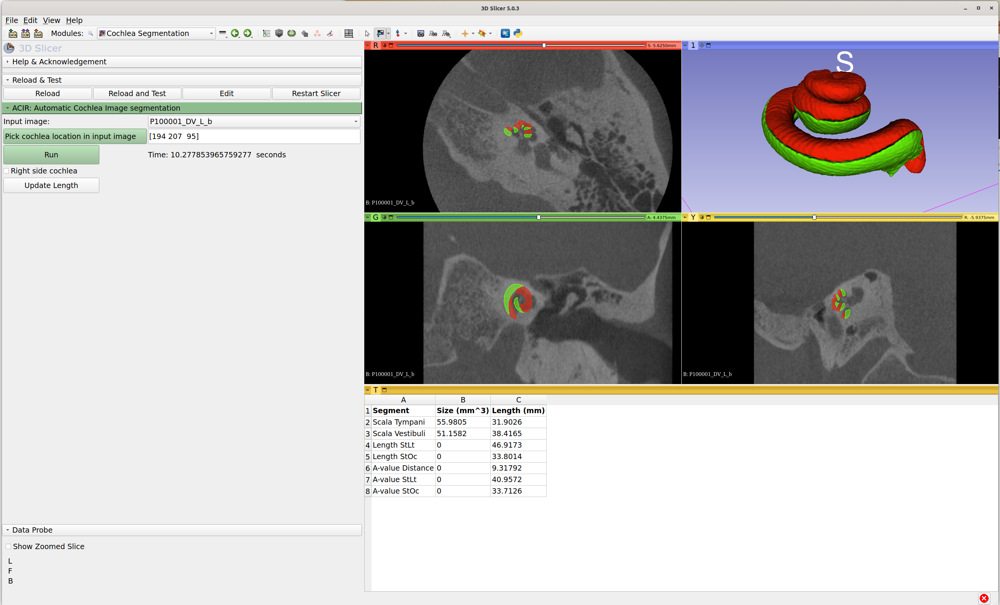

Slicer Cochlea Documentation
The cochlea is a very important part of the inner ear. It is responsible for the transfer of audio signals to the brain.
There are two modules in this extension. The first module, Cochlea Registration, registers and fuses cochlea images from different modalities. The second plugin, Cochlea Segmenttaion, segment out the cochlea structure, scala tympani and other scalae (media and vestibuli) in addition to measure the length and the size of the scala tympani. Both modules required a few seconds to complete the tasks. They use a cusomised set of parameters for elastix toolbox. The extension will download elastix binaries and other necessary files so it will take some minutes when use first time. For testing, cochlea sample datasets can be downloaded using Slicer Data Store module. You are welcome to contribute by optimising the code or sharing your cochlea dataset. For questions or problems using this extension please post in the gitHub issue or in Slicer forum. For more details please read the related publications:
- Ibraheem Al-Dhamari, Sabine Bauer, Dietrich Paulus, Rania Helal, Friedrich Lisseck and Roland Jacob, (2018), Automatic Cochlear Length and Volume Size Estimation, Accepted in: First International Workshop on Context-Aware Operating Theater OR 2, MICCAI 2018, Granada Spain.
- Ibraheem Al-Dhamari, Sabine Bauer, Dietrich Paulus, Roland Jacob, (2018), Automatic Cochlea Multi-modal Images Segmentation Using Adaptive Stochastic Gradient Descent. In: CI2018 DC Emerging Issues in Cochlear Implantation, Washington DC, USA. (link).
- Ibraheem Al-Dhamari, Sabine Bauer, Dietrich Paulus and Roland Jacob, (2017): Automatic Cochlea Segmentation Using Diffusion Snakes. In: 15th Symposium on Cochlear Implants in Children, CI 2017, San Francisco, USA (link).
- Ibraheem Al-Dhamari, Sabine Bauer, Dietrich Paulus, Friedrich Lisseck and Roland Jacob, (2017): ACIR: automatic cochlea image registration. In: Proceedings SPIE Medical Imaging 2017: Image Processing;. SPIE. Bd. 10133. S. 10133p1-10133p5 (link).
- Ibraheem Al-Dhamari, Sabine Bauer, Dietrich Paulus, Friedrich Lissek, Roland Jacob(2016): Automatic Multimodal Registration and Fusion of 3D Human Cochlea Images. In: 14th International Conference on Cochlear Implants, Toronto, Canada. S. 511-514.
How to use:
The following sections give instructions how to use these modules. A more detailed video demo can be found in the links bellow these sections.
Cochlea registration:
1. Load the registration module under VisSimTools.

2. Select the fixed and the moving images.

3. Click on "Pick cochlea location in fixed image".

4. Click inside the cochlea region.

5. repeat steps 3 and 4 using "Pick cochlea location in moving image".
6. Click Run button.

7. In few seconds you will see the registered and fused images.

Cochlea Segmentation:
1. Load the Segmentation module under VisSimTools.

2. Click on "Pick cochlea location in input image". Then click inside the cochlea region.

3. Click Run button. In few seconds you will see the segmentation and the analysis result.
4. You may modify the length by clicking on the end-points in the 3D view then click on Update Length. This helps to correct errors or to get different mesuerments e.g. interior, center or exterior lengths.
Resources: